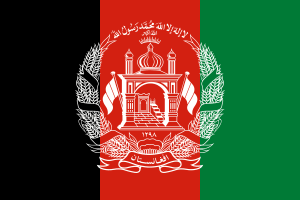
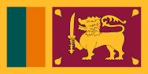
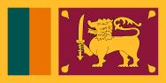
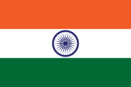

VS
| Sr. No. | England Team | Sr. No. | New Zealand Team |
|---|---|---|---|
| 1 | Jonny Bairstow | 1 | Devon Conway |
| 2 | Dawid Malan | 2 | Will Young |
| 3 | Joe Root | 3 | Rachin Ravindra |
| 4 | Harry Brook | 5 | Daryl Mitchell |
| 5 | Moeen Ali | 6 | Tom Katham (c) (wk) |
| 6 | jos Buttler (c) (wk) | 6 | Glenn Phillips |
| 7 | Liam Livingstone | 7 | Mark Chapman |
| 8 | Sam Curran | 8 | James Neesham |
| 9 | Chris Woakes | 10 | Mitchell Santner |
| 10 | Adil Rashid | 10 | Matt Henry |
| 11 | Mark Wood | 11 | Trent Boult |
Narendra Modi Stadium, Ahmedabad

The Narendra Modi Stadium (NMS), also known as Motera Stadium, is an international cricket stadium in Ahmedabad, Gujarat, India. It is the largest stadium in the world, with a seating capacity of 132,000 spectators.The stadium is owned by the Gujarat Cricket Association and serves as the venue for domestic and international cricket matches.It is one of the world's premier cricket stadiums.
VS
| Sr. No. | Pakistan Team | Sr. No. | Netherland Team |
|---|---|---|---|
| 1 | Fakhar Zaman | 1 | Vikramjit Singh |
| 2 | Imam-ul-Haq | 2 | Max O'Dowd |
| 3 | Babar Azam (c) | 3 | Colin Ackermann |
| 4 | Mohammad Rizwan (wk) | 5 | Bas De Leede |
| 5 | Saud Shakeel | 6 | Teja Nidamanuru |
| 6 | Iftikhar Ahemad | 6 | Scott Edwards (c) (wk) |
| 7 | Mohammad Nawaz | 7 | Saqib Zulfiqar |
| 8 | Shadab Khan | 8 | Roelof Van Der Merwe |
| 9 | Hasan Ali | 10 | Logan Van Beek |
| 10 | Shaheen Afridi | 10 | Aryan Dutt |
| 11 | Haris Rauf | 11 | Paul Van Meekeren |
Rajiv Gandhi International Stadium, Uppal, Hyderabad

The Rajiv Gandhi International Cricket Stadium, commonly known as Uppal Stadium, is an international cricket stadium in Hyderabad, Telangana, India. It is owned and operated by Hyderabad Cricket Association (HCA). It is the home ground of Hyderabad cricket team and Hyderabad women's cricket team.
VS 
| 1 | Hashmatullah Shahidi (c) | 1 | Shakib Al Hasan (c) |
| 2 | Rahmanullah Gurbaz | 2 | Tanzid Hasan Tamim |
| 3 | Ibrahim Zadran | 3 | Litton Kumer Das |
| 4 | Rahmat Shah | 4 | Mehidy Hasan Miraz |
| 5 | Najibullah Zadran | 5 | Najmul Hossain Shanto |
| 6 | Mohammad Nabi | 6 | Mushfiqur Rahim |
| 7 | Azmatullah Omarzai | 7 | Tawhid Hridoy |
| 8 | Rashid Khan | 8 | Mahmudullah Riyad |
| 9 | Mujeeb ur Rahman | 9 | Taskin Ahmed |
| 10 | Naveen-ul-Haq | 10 | Shoriful Islam |
| 11 | Fazalhaq Farooqi | 11 | Mustafizur Rahman |
Himachal Pradesh Cricket Association Stadium, Dharamsala

Himachal Pradesh Cricket Association Stadium (abbreviated as the HPCA Stadium) is an international cricket stadium in Dharamshala hill station of Himachal Pradesh, India. The stadium is the home ground of Himachal Pradesh cricket team, Himachal Pradesh women's cricket team and headquarter of Himachal Pradesh Cricket Association, the governing body of cricket in Himachal Pradesh state.[3] It hosted 5 matches of 2023 Cricket World Cup, including New Zealand v India.
 VS 
VS 
| Sr. No. | South Africa Team | Sr. No. | Sri Lanka Team |
|---|---|---|---|
| 1 | Temba Bavuma (c) | 1 | Dasun Shanaka (c) |
| 2 | Quinton de Kock | 2 | Pathum Nissanka |
| 3 | Rassie van der Dussen | 3 | Kusal Perera |
| 4 | Aiden Markram | 4 | Kusal Mendis |
| 5 | Heinrich Klaasen | 5 | Sadeera Samarawickrama |
| 6 | David Miller | 6 | Charith Asalanka |
| 7 | Marco Jansen | 7 | Dhananjaya de Silva |
| 8 | Gerald Coetzee | 8 | Dunith Wellalage |
| 9 | Keshav Maharaj | 9 | Kasun Rajitha |
| 10 | Kagiso Rabada | 10 | Matheesha Pathirana |
| 11 | Lungi Ngidi | 11 | Dilshan Madushanka |
Arun Jaitley Stadium, Delhi

The Arun Jaitley Stadium is a cricket stadium owned and operated by the Delhi & District Cricket Association (DDCA) and located on Bahadur Shah Zafar Marg, New Delhi. It was established in 1883 as the Feroz Shah Kotla Stadium, and named after the nearby Kotla fort. It is the second oldest functional international cricket stadium in India, after the Eden Gardens of Kolkata. As of 25 October 2019, it has hosted 36 Tests, 29 ODIs and 6 T20I.
 VS
| Sr. No. | Australia Team | Sr. No. | India Team |
|---|---|---|---|
| 1 | Pat Cummins (c) | 1 | Rohit Sharma (c) |
| 2 | David Warner | 2 | Ishan Kishan |
| 3 | Mitchell Marsh | 3 | Virat Kohli |
| 4 | Steve Smith | 4 | Shreyas Iyer |
| 5 | Marnus Labuschagne | 5 | KL Rahul |
| 6 | Glenn Maxwell | 6 | Hardik Pandya |
| 7 | Alex Carey | 7 | Ravindra Jadeja |
| 8 | Cameron Green | 8 | Ravichandran Ashwin |
| 9 | Mitchell Starc | 9 | Kuldeep Yadav |
| 10 | Adam Zampa | 10 | Jasprit Bumrah |
| 11 | Josh Hazlewood | 11 | Mohammed Siraj |
MA Chidambaram Stadium, Chennai

M. A. Chidambaram Stadium, commonly known as the Chepauk Stadium, is a cricket stadium in Chennai, Tamil Nadu, India.Established in 1916, it is the second oldest cricket stadium in the country after Eden Gardens in Kolkata. Formerly known as Madras Cricket Club Ground, the stadium is named after M. A. Chidambaram, the former president of BCCI and Head of TNCA. It is the home ground of the Tamil Nadu cricket team and the Indian Premier League team Chennai Super Kings. Chepauk hosted its first Test match on 10 February 1934, hosted the first match of the first Ranji Trophy in 1934 and the Indian cricket team's first test victory in 1952 against England. The 1986 India-Australia match held at Chepauk was only the second ever Tied Test in the history of the game.
VS
| Sr. No. | New Zealand Team | Sr. No. | Netherland Team |
|---|---|---|---|
| 1 | Tom Latham (c) | 1 | Scott Edwards (c) |
| 2 | Devon Conway | 2 | Vikram Singh |
| 3 | Will Young | 3 | Max O'Dowd |
| 4 | Rachin Ravindra | 4 | Colin Ackermann |
| 5 | Daryl Mitchell | 5 | Bas de Leede |
| 6 | Glenn Phillips | 6 | Teja Nidamanuru |
| 7 | Mark Chapman | 7 | Saqib Zulfiqar |
| 8 | Jimmy Neesham | 8 | Roelof van der Merwe |
| 9 | Matt Henry | 9 | Logan van Beek |
| 10 | Mitch Santner | 10 | Aryan Dutt |
| 11 | Trent Boult | 11 | Paul van Meekeren |
Rajiv Gandhi International Stadium, Uppal, Hyderabad
The Rajiv Gandhi International Cricket Stadium, commonly known as Uppal Stadium, is an international cricket stadium in Hyderabad, Telangana, India. It is owned and operated by Hyderabad Cricket Association (HCA). It is the home ground of Hyderabad cricket team and Hyderabad women's cricket team.
VS
| Sr. No. | England Team | Sr. No. | Bangladesh Team |
|---|---|---|---|
| 1 | Jos Buttler (c) | 1 | Shakib Al Hasan (c) |
| 2 | Dawid Malan | 2 | Tanzid Hasan Tamim |
| 3 | Jonny Bairstow | 3 | Litton Kumer Das |
| 4 | Joe Root | 4 | Mehidy Hasan Miraz |
| 5 | Harry Brook | 5 | Najmul Hossain Shanto |
| 6 | Liam Livingstone | 6 | Mushfiqur Rahim |
| 7 | Sam Curran | 7 | Tawhid Hridoy |
| 8 | Chris Woakes | 8 | Mahmudullah Riyad |
| 9 | Mark Wood | 9 | Taskin Ahmed |
| 10 | Adil Rashid | 10 | Shoriful Islam |
| 11 | Reece Topley | 11 | Mustafizur Rahman |
Himachal Pradesh Cricket Association Stadium, Dharamsala
Himachal Pradesh Cricket Association Stadium (abbreviated as the HPCA Stadium) is an international cricket stadium in Dharamshala hill station of Himachal Pradesh, India. The stadium is the home ground of Himachal Pradesh cricket team, Himachal Pradesh women's cricket team and headquarter of Himachal Pradesh Cricket Association, the governing body of cricket in Himachal Pradesh state.[3] It hosted 5 matches of 2023 Cricket World Cup, including New Zealand v India.
VS
| 1 | Dasun Shanaka (c) | 1 | Babar Azam (c) |
| 2 | Pathum Nissanka | 2 | Abdullah Shafique |
| 3 | Kusal Perera | 3 | Imam-ul-Haq |
| 4 | Kusal Mendis | 4 | Mohammad Rizwan |
| 5 | Sadeera Samarawickrama | 5 | Saud Shakeel |
| 6 | Charith Asalanka | 6 | Iftikhar Ahmed |
| 7 | Dhananjaya de Silva | 7 | Mohammad Nawaz |
| 8 | Dunith Wellalage | 8 | Shadab Khan |
| 9 | Maheesh Theekshana | 9 | Hasan Ali |
| 10 | Matheesha Pathirana | 10 | Shaheen Afridi |
| 11 | Dilshan Madushanka | 11 | Haris Rauf |
Rajiv Gandhi International Stadium, Uppal, Hyderabad
The Rajiv Gandhi International Cricket Stadium, commonly known as Uppal Stadium, is an international cricket stadium in Hyderabad, Telangana, India. It is owned and operated by Hyderabad Cricket Association (HCA). It is the home ground of Hyderabad cricket team and Hyderabad women's cricket team.
VS
| 1 | Hashmatullah Shahidi (c) | 1 | Rohit Sharma (c) |
| 2 | Rahmanullah Gurbaz | 2 | Ishan Kishan |
| 3 | Ibrahim Zadran | 3 | Virat Kohli |
| 4 | Rahmat Shah | 4 | Shreyas Iyer |
| 5 | Najibullah Zadran | 5 | KL Rahul |
| 6 | Mohammad Nabi | 6 | Hardik Pandya |
| 7 | Azmatullah Omarzai | 7 | Ravindra Jadeja |
| 8 | Rashid Khan | 8 | Shardul Thakur |
| 9 | Mujeeb ur Rahman | 9 | Kuldeep Yadav |
| 10 | Naveen-ul-Haq | 10 | Jasprit Bumrah |
| 11 | Fazalhaq Farooqi | 11 | Mohammed Siraj |
Arun Jaitley Stadium, Delhi
The Arun Jaitley Stadium is a cricket stadium owned and operated by the Delhi & District Cricket Association (DDCA) and located on Bahadur Shah Zafar Marg, New Delhi. It was established in 1883 as the Feroz Shah Kotla Stadium, and named after the nearby Kotla fort. It is the second oldest functional international cricket stadium in India, after the Eden Gardens of Kolkata. As of 25 October 2019, it has hosted 36 Tests, 29 ODIs and 6 T20I.
VS
| Sr. No. | South Africa Team | Sr. No. | Australia Team |
|---|---|---|---|
| 1 | Temba Bavuma (c) | 1 | Pat Cummins (c) |
| 2 | Quinton de Kock | 2 | David Warner |
| 3 | Rassie van der Dussen | 3 | Mitchell Marsh |
| 4 | Aiden Markram | 4 | Steve Smith |
| 5 | Heinrich Klaasen | 5 | Marnus Labuschagne |
| 6 | David Miller | 6 | Josh Inglis |
| 7 | Marco Jansen | 7 | Glenn Maxwell |
| 8 | Keshav Maharaj | 8 | Marcus Stoinis |
| 9 | Kagiso Rabada | 9 | Mitchell Starc |
| 10 | Lungi Ngidi | 10 | Adam Zampa |
| 11 | Tabraiz Shamsi | 11 | Josh Hazlewood |
Bharat Ratna Shri Atal Bihari Vajpayee Ekana Cricket Stadium, Lucknow

Ekana Cricket Stadium also known as Bharat Ratna Shri Atal Bihari Vajpayee (BRSABV) Ekana Cricket Stadium is an international cricket stadium in Lucknow, India. The arena has a seating capacity of 50,000, and is the fifth largest international cricket stadium of India. In 2018, the stadium was renamed in honour of India's 10th Prime Minister Atal Bihari Vajpayee. It was formerly named Ekana International Cricket Stadium, and locals prefer to address it as Ekana Cricket Stadium. As of 18 Jan 2024, it has hosted 1 Test, 9 ODIs and 6 T20Is.
VS
| New Zealand Team | Bangladesh Team |
|---|---|
| Kane Williamson(C) | Shakib Al Hasan(C) |
| Tom Latham(VC, WK) | Najmul Hossain Shanto(VC) |
| Trent Boult | LiƩ on Das |
| Mark Chapman | Anamul Haque |
| Devon Conway | Tanzim Hasan Sakib |
| Lockie Ferguson | Tanzid Hasan Tamim |
| Kyle Jamieson | Towhid Hridoy |
| Daryl Mitchell | Mahedi Hassan |
| James Neesham | Mahidy Hasan |
| Glenn Phillips | Shoriful Islam |
MA Chidambaram Stadium, Chennai
M. A. Chidambaram Stadium, commonly known as the Chepauk Stadium, is a cricket stadium in Chennai, Tamil Nadu, India.Established in 1916, it is the second oldest cricket stadium in the country after Eden Gardens in Kolkata. Formerly known as Madras Cricket Club Ground, the stadium is named after M. A. Chidambaram, the former president of BCCI and Head of TNCA. It is the home ground of the Tamil Nadu cricket team and the Indian Premier League team Chennai Super Kings. Chepauk hosted its first Test match on 10 February 1934, hosted the first match of the first Ranji Trophy in 1934 and the Indian cricket team's first test victory in 1952 against England. The 1986 India-Australia match held at Chepauk was only the second ever Tied Test in the history of the game.
VS
| Team India | Team Pakistan |
|---|---|
| Rohit Sharma(C) | Babar Azam(C) |
| Shubhman Gill | Fakhar Zaman |
| Virat Kohli | Imam-Ul-Haq |
| Shreyash Iyer | Salman Ali Agha |
| K.L.Rahul(WC) | IŌ ikar Ahmed |
| Suryakumar Yadav | Mohammad Rizwan(WC) |
| Hardik Pandya(VC) | Mohammad Haris(WC) |
| Ravindra Jadeja | Shadab Khan |
| Ishan Kishan(WC) | Mohammad Navaz |
| Ravichandran Ashwin | Usama Mir |
Narendra Modi Stadium, Ahmedabad
The Narendra Modi Stadium (NMS), also known as Motera Stadium, is an international cricket stadium in Ahmedabad, Gujarat, India. It is the largest stadium in the world, with a seating capacity of 132,000 spectators.The stadium is owned by the Gujarat Cricket Association and serves as the venue for domestic and international cricket matches.It is one of the world's premier cricket stadiums.
VS
| Team England | Team Afganistan |
|---|---|
| Jos Butler(C, WK) | Hashmatulla Shahidi(C) |
| Moeen Ali(VC) | Noor Ahmed |
| Gus Atkinson | imran Alikhil |
| Jonny Bairstow | Fazalhaq Farooqi |
| Harry Brook | Rahmanullah Gurbaz(WK) |
| Brydon Carse | Riaz Hasan |
| Sam Curran | Rashid Khan |
| Lian Livingstone | Mohammad Nabi |
| Dawid Malan | Azmatulla Omarazai |
| Adil Rashid | Abdul Rahman |
Arun Jaitley Stadium, Delhi
The Arun Jaitley Stadium is a cricket stadium owned and operated by the Delhi & District Cricket Association (DDCA) and located on Bahadur Shah Zafar Marg, New Delhi. It was established in 1883 as the Feroz Shah Kotla Stadium, and named after the nearby Kotla fort. It is the second oldest functional international cricket stadium in India, after the Eden Gardens of Kolkata. As of 25 October 2019, it has hosted 36 Tests, 29 ODIs and 6 T20I.
VS
| Team Australia | Team Sri Lanka |
|---|---|
| PaƩ Cummins(C) | Dasun Shanaka(C) |
| Sean AbboƩ | Kusal Mendis(VC, WK) |
| Alex Carey(WK) | Charith Asalanka |
| Cameron Green | Dushmantha Chameera |
| Josh Hazelwood | Dhananjaya de Silva |
| Travis Head | Dushan Hemantha |
| Josh Inglis(WK) | Angelo Mathews |
| Marnus Labuschange | Pathum Nissanka |
| Mitchell Marsh | kusal Rajitha |
| Glenn Maxwell | Sadeera Samarawickrama |
Bharat Ratna Shri Atal Bihari Vajpayee Ekana Cricket Stadium, Lucknow
Ekana Cricket Stadium also known as Bharat Ratna Shri Atal Bihari Vajpayee (BRSABV) Ekana Cricket Stadium is an international cricket stadium in Lucknow, India. The arena has a seating capacity of 50,000, and is the fifth largest international cricket stadium of India. In 2018, the stadium was renamed in honour of India's 10th Prime Minister Atal Bihari Vajpayee. It was formerly named Ekana International Cricket Stadium, and locals prefer to address it as Ekana Cricket Stadium. As of 18 Jan 2024, it has hosted 1 Test, 9 ODIs and 6 T20Is.
VS
| Team South Africa | Team Netherland |
|---|---|
| Temba Bavuma(C) | ScoƩ Edwards(C, WK) |
| Keshav Maharaj | Colin Ackermann |
| Gerald Coetzee | Shariz Ahmad |
| Quinton de Kock(WK) | Wesely Barresi |
| Reeza Hendricks | Bas de Leede |
| Macro Jansen | Noah Croes |
| Heinrich Klaasen(WK) | Aryan DuƩ |
| Aiden Markram | Srbrand Engelbrecht |
| David Miller | Teja Nidamananuru |
| Lungi Ngidi | Max O'Dowd |
Himachal Pradesh Cricket Association Stadium, Dharamsala
Himachal Pradesh Cricket Association Stadium (abbreviated as the HPCA Stadium) is an international cricket stadium in Dharamshala hill station of Himachal Pradesh, India. The stadium is the home ground of Himachal Pradesh cricket team, Himachal Pradesh women's cricket team and headquarter of Himachal Pradesh Cricket Association, the governing body of cricket in Himachal Pradesh state.[3] It hosted 5 matches of 2023 Cricket World Cup, including New Zealand v India.
VS
| Team New Zealand | Team Afganistan |
|---|---|
| Kane Williamson(C) | Hashmatulla Shahidi(C) |
| Tom Latham(VC, WK) | Najmul Hossain Shanto(VC) |
| Trent Boult | Noor Ahmad |
| Mark Chapman | Ikram Alikhil |
| Devon Conway | Fazalhaq Farooqi |
| Lockie Ferguson | Rahmanullah Gurbaz(WK) |
| Kyle Jamieson | Riaz Hassan |
| Daryl Mitchell | Rashid Khan |
| James Neesham | Mohammad Nabi |
| Glenn Phillips | Azmatulla Omarazai |
MA Chidambaram Stadium, Chennai
M. A. Chidambaram Stadium, commonly known as the Chepauk Stadium, is a cricket stadium in Chennai, Tamil Nadu, India.Established in 1916, it is the second oldest cricket stadium in the country after Eden Gardens in Kolkata. Formerly known as Madras Cricket Club Ground, the stadium is named after M. A. Chidambaram, the former president of BCCI and Head of TNCA. It is the home ground of the Tamil Nadu cricket team and the Indian Premier League team Chennai Super Kings. Chepauk hosted its first Test match on 10 February 1934, hosted the first match of the first Ranji Trophy in 1934 and the Indian cricket team's first test victory in 1952 against England. The 1986 India-Australia match held at Chepauk was only the second ever Tied Test in the history of the game.
VS
| Team India | Team Bangladesh |
|---|---|
| Rohit Sharma(C) | Shakib Al Hasan(C) |
| Shubhman Gill | Najmul Hossain Shanto(VC) |
| Virat Kohli | Nasum Ahmad |
| Shreyash Iyer | Taskin Ahmad |
| K.L.Rahul(WK) | LiƩ on Das |
| Suryakumar Yadav | Anamul Haque |
| Hardik Pandya(VC) | Tanzid Hasan Sakib |
| Ravindra Jadeja | Tanzid Hasan Tamim |
| Ishan Kishan(WC) | Towhid Hridoy |
| Ravichandran Ashwin | Mahedi Hasan |
Maharashtra Cricket Association Stadium, Pune

Maharashtra Cricket Association Stadium is an international cricket stadium in Pune, Maharashtra, India. It is owned and operated by the Maharashtra Cricket Association. It is the home ground of the Maharashtra cricket team and Maharashtra women's cricket team, it is the headquarters of the Maharashtra Cricket Association (MCA). The stadium is situated on the outskirts of city limit of Pune in Gahunje village near Mumbai - Pune Expressway. It is one of the premier stadiums of the country. Before its existence, Nehru Stadium of downtown Pune was the home ground of the Maharashtra Cricket team and venue for international matches organised by MCA.
VS
| Team Australia | Team Pakistan |
|---|---|
| Pat Cummins(C) | Babar Azam(C) |
| Sean AbboƩ | Fakhar Zaman |
| Alex Carey | Imam-Ul-Haq |
| Cameron Green | Salman Ali Agha |
| Josh Hazelwood | IŌ ikar Ahmed |
| Travis Head | Mohammad Rizwan(WC) |
| Josh Inglis(WK) | Mohammad Haris(WK) |
| Marnus Labuschange | Shadab Khan |
| Mitchell Marsh | Mohammad Navaz |
| Glenn Maxwell | Usama Mir |
M.Chinnaswamy Stadium, Bengaluru

The M. Chinnaswamy Stadium is a cricket stadium in Bangalore, Karnataka, India. It is owned by Government of Karnataka and operated by Karnataka State Cricket Association (KSCA). Flanked by the picturesque Cubbon Park, Queen's Road, Cubbon and uptown MG Road, this five-decade-old stadium is situated in the heart of the city of Bangalore. It regularly hosts Test, ODI, T20I and first-class cricket matches, as well as musical, cultural events. The stadium is the home ground of the Karnataka state cricket team, Karnataka women's cricket team and IPL franchise Royal Challengers Bangalore. It is owned by the Government of Karnataka and has been leased out to the KSCA for a period of 100 years.
VS
| Team Netherland | Team Sri Lanka |
|---|---|
| ScoƩ Edward(C, Wk) | Dasun Shanaka(C) |
| Colin Ackerman | Kusal Mendis(VC, WK) |
| Shariz Ahmad | Charith Asalanka |
| Wesley Barresi | Dushmantha Chameera |
| Bas de Leeds | Dhananjaya de Silva |
| Noah Croes | Dushan Hemantha |
| Aryan DuƩ | Angelo Mathews |
| Sybrand Engelbrecht | Pathum Nissanka |
| Teja Nidamananuru | kusal Rajitha |
| Max O'Dowd | Sadeera Samarawickrama |
Bharat Ratna Shri Atal Bihari Vajpayee Ekana Cricket Stadium, Lucknow
Ekana Cricket Stadium also known as Bharat Ratna Shri Atal Bihari Vajpayee (BRSABV) Ekana Cricket Stadium is an international cricket stadium in Lucknow, India. The arena has a seating capacity of 50,000, and is the fifth largest international cricket stadium of India. In 2018, the stadium was renamed in honour of India's 10th Prime Minister Atal Bihari Vajpayee. It was formerly named Ekana International Cricket Stadium, and locals prefer to address it as Ekana Cricket Stadium. As of 18 Jan 2024, it has hosted 1 Test, 9 ODIs and 6 T20Is.
VS
| Team England | Team South Africa |
|---|---|
| Jos Butler(C) | Temba Bavuma(C) |
| Moeen Ali(VC) | Keshav Maharaj |
| Gus Atkinson | Gerald Coetzee |
| Jonny Bairstow | Quinton de Kock(WK) |
| Harry Brook | Reeza Hendricks |
| Brydon carse | Macro Jansen |
| Samn Curran | Heinrich Klaasen(WK) |
| Liam Livingston | Aiden Markram |
| Dawid Malan | David Miller |
| Adil Rashid | Lungi Ngidi |
Wankhede Stadium, Mumbai

Wankhede Stadium is an international cricket stadium in Mumbai, India. It is owned and operated by Mumbai Cricket Association (MCA) and is the home ground of the Mumbai Indians. It houses the headquarters of MCA, the Board of Control for Cricket in India (BCCI), and the Indian Premier League (IPL). The stadium is situated near Marine Drive in the Churchgate neighbourhood. Several old cricket clubs are near the stadium, including Hindu Gymkhana, Parsi Gymkhana and Cricket Club of India (CCI).
VS
| Team India | Team New Zealand |
|---|---|
| Rohit Sharma(C) | Kane Williamson(C) |
| Shubhman Gill | Tom Latham(VC, WK) |
| Virat Kohli | Trent Boult |
| Shreyash Iyer | Mark Chapman |
| K.L.Rahul(WK) | Devon Conway |
| Suryakumar Yadav | Loockie Ferguson |
| Hardik Pandya(VC) | Kyle Jamieson |
| Ravindra Jadeja | Daryl Mitchell |
| Ishan Kishan(WC) | james Neesham |
| Ravichandran Ashwin | Glenn Phillips |
Himachal Pradesh Cricket Association Stadium, Dharamsala
Himachal Pradesh Cricket Association Stadium (abbreviated as the HPCA Stadium) is an international cricket stadium in Dharamshala hill station of Himachal Pradesh, India. The stadium is the home ground of Himachal Pradesh cricket team, Himachal Pradesh women's cricket team and headquarter of Himachal Pradesh Cricket Association, the governing body of cricket in Himachal Pradesh state.[3] It hosted 5 matches of 2023 Cricket World Cup, including New Zealand v India.
VS
| Team Pakistan | Team Afganistan |
|---|---|
| Babar Azam(C) | Hashmatulla Shahidi(C, WK) |
| Fakhar Zaman | Noor Ahmad |
| Imam-Ul-Haq | ikram Alikhil |
| Salman Ali Agha | Fazalhaq Farooqi |
| IŌ ikar Ahmed | Rahmanullah Gurbaz(WK) |
| Mohammad Rizwan(WK) | Riaz Hassan |
| Mohammad Haris(WK) | Rashid Khan |
| Shadab Khan | Mohammad Nabi |
| Mohammad Navaz | Azmatulla Omarzai |
| Usama Mir | Abdul Rahman |
MA Chidambaram Stadium, Chennai
M. A. Chidambaram Stadium, commonly known as the Chepauk Stadium, is a cricket stadium in Chennai, Tamil Nadu, India.Established in 1916, it is the second oldest cricket stadium in the country after Eden Gardens in Kolkata. Formerly known as Madras Cricket Club Ground, the stadium is named after M. A. Chidambaram, the former president of BCCI and Head of TNCA. It is the home ground of the Tamil Nadu cricket team and the Indian Premier League team Chennai Super Kings. Chepauk hosted its first Test match on 10 February 1934, hosted the first match of the first Ranji Trophy in 1934 and the Indian cricket team's first test victory in 1952 against England. The 1986 India-Australia match held at Chepauk was only the second ever Tied Test in the history of the game.
VS
| Team South Africa | Team Bangladesh |
|---|---|
| Temba Bavuma(C) | Shakib Al Hasan(C) |
| Keshav Maharaj | Najmul Hossain Shanto(VC) |
| Gerald Coetzee | Nasum Ahmad |
| Quinton de Kock(WK) | Taskin Ahmad |
| Reeza Hendricks | LiƩ on Das |
| Macro Jansen | Anamul Haque |
| Heinrich Klaasen(WK) | Tanzim Hasan Shakib |
| Aiden Markram | Tanzid Hasan Tamim |
| David Miller | Towhid Hridoy |
| Lungi Ngidi | Mahedi Hasan |
Wankhede Stadium, Mumbai
Wankhede Stadium is an international cricket stadium in Mumbai, India. It is owned and operated by Mumbai Cricket Association (MCA) and is the home ground of the Mumbai Indians. It houses the headquarters of MCA, the Board of Control for Cricket in India (BCCI), and the Indian Premier League (IPL). The stadium is situated near Marine Drive in the Churchgate neighbourhood. Several old cricket clubs are near the stadium, including Hindu Gymkhana, Parsi Gymkhana and Cricket Club of India (CCI).
VS
| Team Australia | Team Netherland |
|---|---|
| Pat Cummins(C) | ScoƩ Edwards(C, WK) |
| Sean AbboƩ | Colin Ackermann |
| Alex Carey(WK) | Shariz Ahmad |
| Cameron Green | Wesely Barresi |
| Josh Hazelwood | Bas de Leede |
| Travis Head | Noah Croes |
| Marnus Labuschange | Aryan DuƩ |
| Josh Inglis(WK) | Srbrand Engelbrecht |
| Mitchell Marsh | Teja Nidamananuru |
| Glenn Maxwell | Max O'Dowd |
Arun Jaitley Stadium, Delhi
The Arun Jaitley Stadium is a cricket stadium owned and operated by the Delhi & District Cricket Association (DDCA) and located on Bahadur Shah Zafar Marg, New Delhi. It was established in 1883 as the Feroz Shah Kotla Stadium, and named after the nearby Kotla fort. It is the second oldest functional international cricket stadium in India, after the Eden Gardens of Kolkata. As of 25 October 2019, it has hosted 36 Tests, 29 ODIs and 6 T20I.
VS
| Team England | Team Sri Lanka |
|---|---|
| Josh Butler(C, Wk) | Dasun Shanaka(C) |
| Moeen Ali(VC) | Kusal Mendis(VC, WK) |
| Gus Atkinson | Charith Asalanka |
| Jonny Bairstow | Dushmantha Chameera |
| Harry Brook | Dhananjaya de Silva |
| Brydon Carse | Dushan Hemantha |
| Sam Curran | Angelo Mathews |
| Liam Livingstone | Pathum Nissanka |
| Dawid Malan | kusal Rajitha |
| Adil Rashid | Sadeera Samarawickrama |
M.Chinnaswamy Stadium, Bengaluru
The M. Chinnaswamy Stadium is a cricket stadium in Bangalore, Karnataka, India. It is owned by Government of Karnataka and operated by Karnataka State Cricket Association (KSCA). Flanked by the picturesque Cubbon Park, Queen's Road, Cubbon and uptown MG Road, this five-decade-old stadium is situated in the heart of the city of Bangalore. It regularly hosts Test, ODI, T20I and first-class cricket matches, as well as musical, cultural events. The stadium is the home ground of the Karnataka state cricket team, Karnataka women's cricket team and IPL franchise Royal Challengers Bangalore. It is owned by the Government of Karnataka and has been leased out to the KSCA for a period of 100 years.
VS
| Team Pakistan | Team South Africa |
|---|---|
| Babar Azam(C) | Temba Bavuma(C) |
| Shadab Khan(VC) | Keshav Maharaj |
| Shaheed Afridi | Gerald Coetzee |
| IŌ ikhar Ahmad | Quinton de Kock(WK) |
| Hasan Ali | Reeza Hendricks |
| Salman Ali Agha | Macro Jansen |
| Usama Mir | Heinrich Klaasen(WK) |
| Mohammad Nawaz | Aiden Markram |
| Haris Rauf | David Miller |
| Mohammad Rizwan(WK) | Lungi Ngidi |
MA Chidambaram Stadium, Chennai
M. A. Chidambaram Stadium, commonly known as the Chepauk Stadium, is a cricket stadium in Chennai, Tamil Nadu, India.Established in 1916, it is the second oldest cricket stadium in the country after Eden Gardens in Kolkata. Formerly known as Madras Cricket Club Ground, the stadium is named after M. A. Chidambaram, the former president of BCCI and Head of TNCA. It is the home ground of the Tamil Nadu cricket team and the Indian Premier League team Chennai Super Kings. Chepauk hosted its first Test match on 10 February 1934, hosted the first match of the first Ranji Trophy in 1934 and the Indian cricket team's first test victory in 1952 against England. The 1986 India-Australia match held at Chepauk was only the second ever Tied Test in the history of the game.
VS
| Team Australia | Team New zealand |
|---|---|
| Pat Cummins(C) | Kane Williamson(C) |
| Sean AbboƩ | Tom Latham(VC, WK) |
| Alex Carey(Wk) | Trent Boult |
| Cameron Green | Mark Chapman |
| Josh Hazelwood | Devon Conway |
| Travis Head | Lockie Ferguson |
| Josh Indglis(WK) | kyle Jamieson |
| marnus Labuschange | Daryl Mitchell |
| Mitchell Marsh | James Neesham |
| Glenn Maxwell | Rachin Ravindra |
Himachal Pradesh Cricket Association Stadium, Dharamsala
Himachal Pradesh Cricket Association Stadium (abbreviated as the HPCA Stadium) is an international cricket stadium in Dharamshala hill station of Himachal Pradesh, India. The stadium is the home ground of Himachal Pradesh cricket team, Himachal Pradesh women's cricket team and headquarter of Himachal Pradesh Cricket Association, the governing body of cricket in Himachal Pradesh state.[3] It hosted 5 matches of 2023 Cricket World Cup, including New Zealand v India.
VS
| Team Netherland | Team Bangladesh |
|---|---|
| ScoƩ Edward(C, WK) | Shakib Al Hasan(C) |
| Colin Ackerman | Najmul Hossain Shanto(VC) |
| Shariz Ahmad | Nasum Ahmad |
| Wesley Barresi | Taskin Ahmad |
| Bas de Leede | LiƩ on Das |
| Noah Croes | Anamul Haque |
| Aryan DuƩ | Tanzim Hasan Shakib |
| Sybrand Engelbrecht | Tanzid Hasan Tamim |
| Teja Nidamananuru | Towhid Hridoy |
| Aryan DuƩ | Mahedi Hasan |
Eden Gardens, Kolkata

Eden Gardens is an international cricket stadium in Kolkata, India. Established in 1864, it is the oldest and second-largest cricket stadium in India and third-largest in the world. The stadium currently has a capacity of 68,000. It is owned and operated by Cricket Association of Bengal (CAB) and is the home ground of the Kolkata Knight Riders. It houses the headquarters of Cricket Association of Bengal.
VS
| Team India | Team England |
|---|---|
| Rohit Sharma(C) | Josh Butler(C, Wk) |
| Shubhman Gill | Moeen Ali(VC) |
| Virat Kohli | Gus Atkinson |
| Shreyash Iyer | Jonny Bairstow |
| K.L.Rahul(WK) | Harry Brook |
| Suryakumar Yadav | Brydon Carse |
| Hardik Pandya(VC) | Sam Curran |
| Ravindra Jadeja | Liam Livingston |
| Ishan Kishan(WC) | Dawid Malan |
| Ravichandran Ashwin | Adil Rashid |
Bharat Ratna Shri Atal Bihari Vajpayee Ekana Cricket Stadium, Lucknow
Ekana Cricket Stadium also known as Bharat Ratna Shri Atal Bihari Vajpayee (BRSABV) Ekana Cricket Stadium is an international cricket stadium in Lucknow, India. The arena has a seating capacity of 50,000, and is the fifth largest international cricket stadium of India. In 2018, the stadium was renamed in honour of India's 10th Prime Minister Atal Bihari Vajpayee. It was formerly named Ekana International Cricket Stadium, and locals prefer to address it as Ekana Cricket Stadium. As of 18 Jan 2024, it has hosted 1 Test, 9 ODIs and 6 T20Is.
VS
| Team Afganistan | Team Sri Lanka |
|---|---|
| Hashmatulla Shahidi(C) | Dasun Shanaka(C) |
| Noor Ahmad | Kusal Mendis(VC, WK) |
| Ikram Alikhil | Charith Asalanka |
| Fazalhaq Farooqi | Dushmantha Chameera |
| Rahmanullah Gurbaz | Dhananjaya de Silva |
| Riaz Hassan | Dushan Hemantha |
| Rashid Khan | Angelo Mathews |
| Mohammad Nabi | Pathum Nissanka |
| Azmatullah Omarzai | kusal Rajitha |
| Abdul Rahman | Sadeera Samarawickrama |
Maharashtra Cricket Association Stadium, Pune
Maharashtra Cricket Association Stadium is an international cricket stadium in Pune, Maharashtra, India. It is owned and operated by the Maharashtra Cricket Association. It is the home ground of the Maharashtra cricket team and Maharashtra women's cricket team, it is the headquarters of the Maharashtra Cricket Association (MCA). The stadium is situated on the outskirts of city limit of Pune in Gahunje village near Mumbai - Pune Expressway. It is one of the premier stadiums of the country. Before its existence, Nehru Stadium of downtown Pune was the home ground of the Maharashtra Cricket team and venue for international matches organised by MCA.
VS
| Team Pakistan | Team Bangladesh |
|---|---|
| Babar Azam(C) | Shakib Al Hasan(C) |
| Shadab Khan(VC) | Najmul Hossain Shanto(VC) |
| Shaheen Afridi | Nasum Ahmad |
| IŌ ikar Ahmad | Taskin Ahmad |
| Hasan Ali | LiƩ on Das |
| Salman Ali Agha | Anamul Haque |
| Usama Mir | Tanzim Hasan Shakib |
| Mohammad Nawaz | Tanzid Hasan Tamim |
| Haris Rauf | Towhid Hridoy |
| Mohammad Rizwan(WK) | Mahedi Hasan |
Eden Gardens, Kolkata
Eden Gardens is an international cricket stadium in Kolkata, India. Established in 1864, it is the oldest and second-largest cricket stadium in India and third-largest in the world. The stadium currently has a capacity of 68,000. It is owned and operated by Cricket Association of Bengal (CAB) and is the home ground of the Kolkata Knight Riders. It houses the headquarters of Cricket Association of Bengal.
VS
| Team New Zealand | Team South Africa |
|---|---|
| kane Williamson(C) | Temba Bavuma(C) |
| Tom Latham(VC, WK) | Keshav Maharaj |
| Trent Boult | Gerald Coetzee |
| Mark Chapman | Quinton de Kock(WK) |
| Devon Conway | Reeza Hendricks |
| Lockie Ferguson | Macro Jansen |
| Kyle Jamieson | Heinrich Klaasen(WK) |
| Daryl Mitchell | Aiden Markram |
| James Neesham | David Miller |
| Glenn Phillips | Lungi Ngidi |
Maharashtra Cricket Association Stadium, Pune
Maharashtra Cricket Association Stadium is an international cricket stadium in Pune, Maharashtra, India. It is owned and operated by the Maharashtra Cricket Association. It is the home ground of the Maharashtra cricket team and Maharashtra women's cricket team, it is the headquarters of the Maharashtra Cricket Association (MCA). The stadium is situated on the outskirts of city limit of Pune in Gahunje village near Mumbai - Pune Expressway. It is one of the premier stadiums of the country. Before its existence, Nehru Stadium of downtown Pune was the home ground of the Maharashtra Cricket team and venue for international matches organised by MCA.
VS
| Team India | Team Sri Lanka |
|---|---|
| Rohit Sharma(C) | Kusal Mendis(C, Wk) |
| Shubhman Gill | Charith Asalanka |
| Virat Kohli | Dushmantha Chameera |
| Shreyash Iyer | Dhananjaya de Silva |
| K.L.Rahul(WK) | Dushan Hemantha |
| Suryakumar Yadav | Chamika karunaratne |
| Hardik Pandya(VC) | Dimuth Karunaratne |
| Ravindra Jadeja | Dilshan Madushanka |
| Ishan Kishan(WC) | Angelo Mathews |
| Ravichandran Ashwin | Pathum Nissanka |
Wankhede Stadium, Mumbai
Wankhede Stadium is an international cricket stadium in Mumbai, India. It is owned and operated by Mumbai Cricket Association (MCA) and is the home ground of the Mumbai Indians. It houses the headquarters of MCA, the Board of Control for Cricket in India (BCCI), and the Indian Premier League (IPL). The stadium is situated near Marine Drive in the Churchgate neighbourhood. Several old cricket clubs are near the stadium, including Hindu Gymkhana, Parsi Gymkhana and Cricket Club of India (CCI).
VS
| Team Netherland | Team Afganistan |
|---|---|
| ScoƩ Edward(C, WK) | Hashmatulla Shahidi(C, WK) |
| Colin Ackerman | Noor Ahmad |
| Shariz Ahmad | ikram Alikhil |
| Wesley Barresi | Fazalhaq Farooqi |
| Baas de Leeds | Rahmanullah Gurbaz(WK) |
| Noah Croes | Riaz Hassan |
| Aryan DuƩ | Rashid Khan |
| Sybrand Engelbrecht | Mohammad Nabi |
| Teja Nidamananuru | Azmatulla Omarzai |
| Max O'Dowd | Abdul Rahman |
Bharat Ratna Shri Atal Bihari Vajpayee Ekana Cricket Stadium, Lucknow
Ekana Cricket Stadium also known as Bharat Ratna Shri Atal Bihari Vajpayee (BRSABV) Ekana Cricket Stadium is an international cricket stadium in Lucknow, India. The arena has a seating capacity of 50,000, and is the fifth largest international cricket stadium of India. In 2018, the stadium was renamed in honour of India's 10th Prime Minister Atal Bihari Vajpayee. It was formerly named Ekana International Cricket Stadium, and locals prefer to address it as Ekana Cricket Stadium. As of 18 Jan 2024, it has hosted 1 Test, 9 ODIs and 6 T20Is.
VS
| Team New Zealand | Team Pakistan |
|---|---|
| kane Williamson(C) | Babar Azam(C) |
| Tom Latham(VC, WK) | Shabad Khan(VC) |
| Trent Boult | Shaheen Afridi |
| Mark Chapman | IŌ ikhar Ahmed |
| Devon Conway | Hasan Ali |
| Lockie Ferguson | Salman Ali Agha |
| Kyle Jamieson | Usama Mir |
| Daryl Mitchell | Mohammad Nawaz |
| James Neesham | Haris Rauf |
| Glenn Phillips | Mohammad Rizwan(WK) |
M.Chinnaswamy Stadium, Bengaluru
The M. Chinnaswamy Stadium is a cricket stadium in Bangalore, Karnataka, India. It is owned by Government of Karnataka and operated by Karnataka State Cricket Association (KSCA). Flanked by the picturesque Cubbon Park, Queen's Road, Cubbon and uptown MG Road, this five-decade-old stadium is situated in the heart of the city of Bangalore. It regularly hosts Test, ODI, T20I and first-class cricket matches, as well as musical, cultural events. The stadium is the home ground of the Karnataka state cricket team, Karnataka women's cricket team and IPL franchise Royal Challengers Bangalore. It is owned by the Government of Karnataka and has been leased out to the KSCA for a period of 100 years.
VS
| Team England | Team Australia |
|---|---|
| Josh Butler(C, Wk) | Pat Cummins(C) |
| Moeen Ali(VC) | Sean AbboƩ |
| Gus Atkinson | Alex Carey(WK) |
| Jonny Bairstow | Cameron Green |
| Harry Brook | Josh Hazelwood |
| Brydon Carse | Travis Head |
| Sam Curran | Josh Inglis(WK) |
| Liam Livingstone | Marnus Labuschange |
| Dawid Malan | Mitchell Marsh |
| Adil Rashid | Glenn Maxwell |
Narendra Modi Stadium, Ahmedabad
The Narendra Modi Stadium (NMS), also known as Motera Stadium, is an international cricket stadium in Ahmedabad, Gujarat, India. It is the largest stadium in the world, with a seating capacity of 132,000 spectators.The stadium is owned by the Gujarat Cricket Association and serves as the venue for domestic and international cricket matches.It is one of the world's premier cricket stadiums.
VS
| Team India | Team South Africa |
|---|---|
| Rohit Sharma(C) | Temba Bavuman(C) |
| Shubhman Gill | Keshav Maharaj(VC) |
| Virat Kohli | Gerald Coetzee |
| Shreyash Iyer | Quinton de Cock(WK) |
| K.L.Rahul(WK) | Reeza Hendricks |
| Suryakumar Yadav | Marco Jansen |
| Hardik Pandya(VC) | Heinrich Klaasen(WK) |
| Ravindra Jadeja | Aiden Markram |
| Ishan Kishan(WC) | David Miller |
| Ravichandran Ashwin | Lungi Ngidi |
Eden Gardens, Kolkata
Eden Gardens is an international cricket stadium in Kolkata, India. Established in 1864, it is the oldest and second-largest cricket stadium in India and third-largest in the world. The stadium currently has a capacity of 68,000. It is owned and operated by Cricket Association of Bengal (CAB) and is the home ground of the Kolkata Knight Riders. It houses the headquarters of Cricket Association of Bengal.
VS
| Team Bangladesh | Team Sri Lanka |
|---|---|
| Shakib Al Hasan(C) | Dasun Shanaka(C) |
| Najmul Hossain Shanto(VC) | Kusal Mendis(VC, WK) |
| Nasum Ahmed | Charith Asalanka |
| Taskin Ahmed | Dushmantha Chameera |
| LiƩ on Das | Dhananjaya de Silva |
| Anamul Haque | Dushan Hemantha |
| Towhid Hridoy | Chamika Kuranartne |
| Mahedi Hasan | Dimuth Karunaratne |
| Mehidy Hasan | Angelo Mathews |
| Shoriful Islam | Pathum Nissanka |
Arun Jaitley Stadium, Delhi
The Arun Jaitley Stadium is a cricket stadium owned and operated by the Delhi & District Cricket Association (DDCA) and located on Bahadur Shah Zafar Marg, New Delhi. It was established in 1883 as the Feroz Shah Kotla Stadium, and named after the nearby Kotla fort. It is the second oldest functional international cricket stadium in India, after the Eden Gardens of Kolkata. As of 25 October 2019, it has hosted 36 Tests, 29 ODIs and 6 T20I.
VS
| Team Australia | Team Afganistan |
|---|---|
| PaƩ Cummins(C) | Hashmatulla Shahidi(C, WK) |
| Sean AbboƩ | Noor Ahmad |
| Alex Carey(WK) | ikram Alikhil |
| Cameron Green | Fazalhaq Farooqi |
| Josh Hazelwood | Rahmanullah Gurbaz(WK) |
| Travis Head | Riaz Hassan |
| Josh Inglis(WK) | Rashid Khan |
| Marnus Labuschange | Mohammad Nabi |
| Mitchell Marsh | Azmatulla Omarzai |
| Glenn Maxwell | Abdul Rahman |
Wankhede Stadium, Mumbai
Wankhede Stadium is an international cricket stadium in Mumbai, India. It is owned and operated by Mumbai Cricket Association (MCA) and is the home ground of the Mumbai Indians. It houses the headquarters of MCA, the Board of Control for Cricket in India (BCCI), and the Indian Premier League (IPL). The stadium is situated near Marine Drive in the Churchgate neighbourhood. Several old cricket clubs are near the stadium, including Hindu Gymkhana, Parsi Gymkhana and Cricket Club of India (CCI).
VS
| Team England | Team Netherland |
|---|---|
| Josh Butler(C, Wk) | ScoƩ Edwards(C, WK) |
| Moeen Ali(VC) | Colin Ackermann |
| Gus Atkinson | Shariz Ahmad |
| Jonny Bairstow | Wesley Barresi |
| Harry Brook | Bas de Leede |
| Brydon Carse | Noah Croes |
| Sam Curran | Aryan DuƩ |
| Liam Livingstone | Sybtrand Engelbrecht |
| Dawid Malan | Max O'Dowd |
| Adil Rashid | Vikramjit Singh |
Maharashtra Cricket Association Stadium, Pune
Maharashtra Cricket Association Stadium is an international cricket stadium in Pune, Maharashtra, India. It is owned and operated by the Maharashtra Cricket Association. It is the home ground of the Maharashtra cricket team and Maharashtra women's cricket team, it is the headquarters of the Maharashtra Cricket Association (MCA). The stadium is situated on the outskirts of city limit of Pune in Gahunje village near Mumbai - Pune Expressway. It is one of the premier stadiums of the country. Before its existence, Nehru Stadium of downtown Pune was the home ground of the Maharashtra Cricket team and venue for international matches organised by MCA.
VS
| Team New Zealand | Team Sri Lanka |
|---|---|
| kane Williamson(C) | Dasun Shanaka(C) |
| Tom Latham(VC, WK) | Kusal Mendis(VC, WK) |
| Trent Boult | Charith Asalanka |
| Mark Chapman | Dushmantha Chameera |
| Devon Conway | Dhananjaya de Silva |
| Lockie Ferguson | Dushan Hemantha |
| Kyle Jamieson | Chamika Kuranaratne |
| Daryl Mitchell | Dimuth Kuranartne |
| James Neesham | Angelo Methews |
| Glenn Phillips | Pathum Nissanka |
M.Chinnaswamy Stadium, Bengaluru
The M. Chinnaswamy Stadium is a cricket stadium in Bangalore, Karnataka, India. It is owned by Government of Karnataka and operated by Karnataka State Cricket Association (KSCA). Flanked by the picturesque Cubbon Park, Queen's Road, Cubbon and uptown MG Road, this five-decade-old stadium is situated in the heart of the city of Bangalore. It regularly hosts Test, ODI, T20I and first-class cricket matches, as well as musical, cultural events. The stadium is the home ground of the Karnataka state cricket team, Karnataka women's cricket team and IPL franchise Royal Challengers Bangalore. It is owned by the Government of Karnataka and has been leased out to the KSCA for a period of 100 years.
VS
| Team South Africa | Team Afganistan |
|---|---|
| Temba Bavuma(C) | Hashmatulla Shahidi(C, WK) |
| Keshav Maharaj(VC) | Noor Ahmad |
| Gerald Coetzee | ikram Alikhil |
| Quinton de Kock(WK) | Fazalhaq Farooqi |
| Reeza Hendricks | Rahmanullah Gurbaz(WK) |
| Macro Jansen | Riaz Hassan |
| Heinrich Klaasen(WK) | Rashid Khan |
| Aiden Markram | Mohammad Nabi |
| David Miller | Azmatulla Omarzai |
| Lungi Ngidi | Abdul Rahman |
Narendra Modi Stadium, Ahmedabad
The Narendra Modi Stadium (NMS), also known as Motera Stadium, is an international cricket stadium in Ahmedabad, Gujarat, India. It is the largest stadium in the world, with a seating capacity of 132,000 spectators.The stadium is owned by the Gujarat Cricket Association and serves as the venue for domestic and international cricket matches.It is one of the world's premier cricket stadiums.
VS
| Team Australia | Team Bangladesh |
|---|---|
| PaƩ Cummins(C) | Shakib al Hasan(C) |
| Sean AbboƩ | Najmul Hosasin Shanto(VC) |
| Alex Carey(WK) | Nasum Ahmad |
| Cameron Green | Taskin Ahmad |
| Josh Hazelwood | LiƩ on Das |
| Travis Head | Anamul Haq |
| Josh Inglis(WK) | Tanzim Hasan Sakib |
| Marnus Labuschange | Tanzim Hasan Tamim |
| Mitchell Marsh | Towhid Hridoy |
| Glenn Maxwell | Mahedi Hasan |
Maharashtra Cricket Association Stadium, Pune
Maharashtra Cricket Association Stadium is an international cricket stadium in Pune, Maharashtra, India. It is owned and operated by the Maharashtra Cricket Association. It is the home ground of the Maharashtra cricket team and Maharashtra women's cricket team, it is the headquarters of the Maharashtra Cricket Association (MCA). The stadium is situated on the outskirts of city limit of Pune in Gahunje village near Mumbai - Pune Expressway. It is one of the premier stadiums of the country. Before its existence, Nehru Stadium of downtown Pune was the home ground of the Maharashtra Cricket team and venue for international matches organised by MCA.
VS
| Team England | Team Pakistan |
|---|---|
| Josh Butler(C, Wk) | Babar Azam(C) |
| Moeen Ali(VC) | Shabab Khan(VC) |
| Gus Atkinson | Shaheen Afridi |
| Jonny Bairstow | IŌ ikar Ahmad |
| Harry Brook | Hasan Ahmed |
| Brydon Carse | Hasan Ali |
| Sam Curran | Salman Ali |
| Liam Livingstone | Usama Mir |
| Dawid Malan | Mohammad Nawaz |
| Adil Rashid | Haris Rauf |
Eden Gardens, Kolkata
Eden Gardens is an international cricket stadium in Kolkata, India. Established in 1864, it is the oldest and second-largest cricket stadium in India and third-largest in the world. The stadium currently has a capacity of 68,000. It is owned and operated by Cricket Association of Bengal (CAB) and is the home ground of the Kolkata Knight Riders. It houses the headquarters of Cricket Association of Bengal.
VS
| Team India | Team Netherland |
|---|---|
| Rohit Sharma(C) | ScoƩ Edward(C, WK) |
| Shubhman Gill | Colin Ackerman |
| Virat Kohli | Shariz Ahmad |
| Shreyash Iyer | Wesley Barresi |
| K.L.Rahul(WK) | Bas de Leeds |
| Suryakumar Yadav | Noah Croes |
| Hardik Pandya(VC) | Aryan DuƩ |
| Ravindra Jadeja | Sybrand Engelbrecht |
| Ishan Kishan(WC) | Teja Nidamananuru |
| Ravichandran Ashwin | Max O'Dowd |
M.Chinnaswamy Stadium, Bengaluru
The M. Chinnaswamy Stadium is a cricket stadium in Bangalore, Karnataka, India. It is owned by Government of Karnataka and operated by Karnataka State Cricket Association (KSCA). Flanked by the picturesque Cubbon Park, Queen's Road, Cubbon and uptown MG Road, this five-decade-old stadium is situated in the heart of the city of Bangalore. It regularly hosts Test, ODI, T20I and first-class cricket matches, as well as musical, cultural events. The stadium is the home ground of the Karnataka state cricket team, Karnataka women's cricket team and IPL franchise Royal Challengers Bangalore. It is owned by the Government of Karnataka and has been leased out to the KSCA for a period of 100 years.
VS
| Team Australia | Team South Africa |
|---|---|
| TPat Cummins(C) | Temba Bavuma(C) |
| Sean Abbot | Keshav Maharaj |
| Alex Carey(WK) | Gerald Coetzee |
| Cameron Green | Quinton de Kock(WK) |
| Josh Hazelwood | Reeza Hendricks |
| Travis Head | Macro Jansen |
| Josh Inglis | Heinrich Klaasen(WK) |
| Marnus Labuschange | Aiden Markram |
| Mitchell Marsh | David Miller |
| Glenn Maxwell | Lungi Ngidi |
Wankhede Stadium, Mumbai
Wankhede Stadium is an international cricket stadium in Mumbai, India. It is owned and operated by Mumbai Cricket Association (MCA) and is the home ground of the Mumbai Indians. It houses the headquarters of MCA, the Board of Control for Cricket in India (BCCI), and the Indian Premier League (IPL). The stadium is situated near Marine Drive in the Churchgate neighbourhood. Several old cricket clubs are near the stadium, including Hindu Gymkhana, Parsi Gymkhana and Cricket Club of India (CCI).
VS
| Team India | Team Australia |
|---|---|
| Rohit Sharma(C) | Pat Cummins(C) |
| Shubhman Gill | Sean AboƩ |
| Virat Kohli | Alex Carey(WK) |
| Shreyash Iyer | Cameron Green |
| K.L.Rahul(WC) | Josh Hazelwood |
| Suryakumar Yadav | Travis Head |
| Hardik Pandya(VC) | josh Inglis(WK) |
| Ravindra Jadeja | Marnnus Labuschange |
| Ishan Kishan(WK) | Mitchell marsh |
| Ravichandran Ashwin | Glenn Maxwell |
Eden Gardens, Kolkata
Eden Gardens is an international cricket stadium in Kolkata, India. Established in 1864, it is the oldest and second-largest cricket stadium in India and third-largest in the world. The stadium currently has a capacity of 68,000. It is owned and operated by Cricket Association of Bengal (CAB) and is the home ground of the Kolkata Knight Riders. It houses the headquarters of Cricket Association of Bengal.
VS
| Sr. No. | England Team | Sr. No. | New Zealand Team |
|---|---|---|---|
| 1 | Jonny Bairstow | 1 | Devon Conway |
| 2 | Dawid Malan | 2 | Will Young |
| 3 | Joe Root | 3 | Rachin Ravindra |
| 4 | Harry Brook | 5 | Daryl Mitchell |
| 5 | Moeen Ali | 6 | Tom Katham (c) (wk) |
| 6 | jos Buttler (c) (wk) | 6 | Glenn Phillips |
| 7 | Liam Livingstone | 7 | Mark Chapman |
| 8 | Sam Curran | 8 | James Neesham |
| 9 | Chris Woakes | 10 | Mitchell Santner |
| 10 | Adil Rashid | 10 | Matt Henry |
| 11 | Mark Wood | 11 | Trent Boult |
Narendra Modi Stadium, Ahmedabad
The Narendra Modi Stadium (NMS), also known as Motera Stadium, is an international cricket stadium in Ahmedabad, Gujarat, India. It is the largest stadium in the world, with a seating capacity of 132,000 spectators.The stadium is owned by the Gujarat Cricket Association and serves as the venue for domestic and international cricket matches.It is one of the world's premier cricket stadiums.